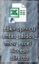
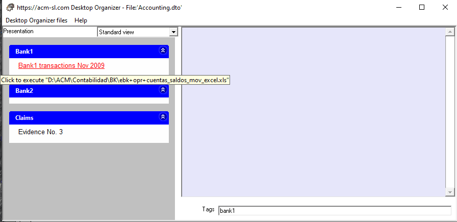
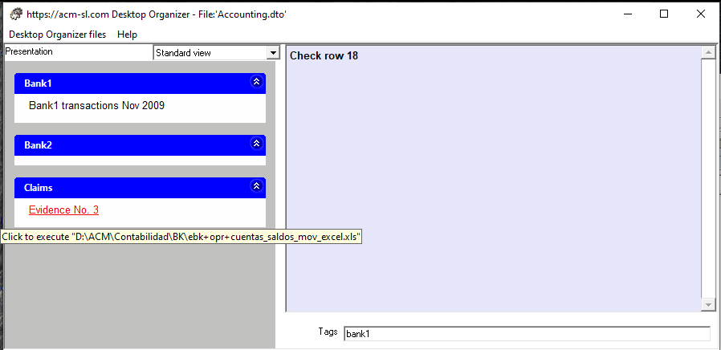

A common practice when deciding where to store a document (file) on disk is to create folders and subfolders, whose names imply a certain classification of the document. E.g. "Photos", "Photos / 2005", "Photos / 2005 / Lucia", etc.
This nomenclature is normally chosen to help us remember where we left the document. However, there are documents whose names follow patterns that are not self-explanatory: e.g. "D: \ ACM \ Accounting \ BK \ ebk + opr + excel_mov_excel.xls_ accounts.". If this document is often used, it is common to create a "direct link" on the Desktop, as the following figure shows:

This approach has the disadvantage that the document cannot be well identified through the icon (in this case, it is the generic icon associated with a spreadsheet), and text that is meaningful must be used. But, as you can see, the link does not offer enough space for that text to be meaningful.
The alternative in the Desk Organizer for this problem is the "Option" concept. Next figure shows a way to access this document through a meaningful name ("Bank1 transaction Nov 2009")

The fact that we have access to Options through Groups has the benefit of multiples references to the same document. In the next figure, the former document (.xls) is used under a different Group ("Claims"), that corresponds to legal claim, in which this document is referred with a different Title ("Evidence No. 3"):
